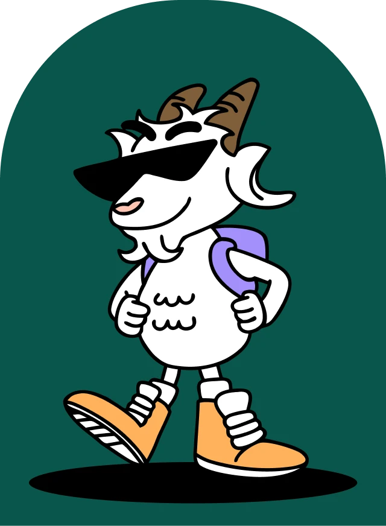
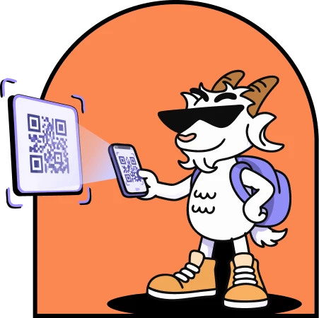
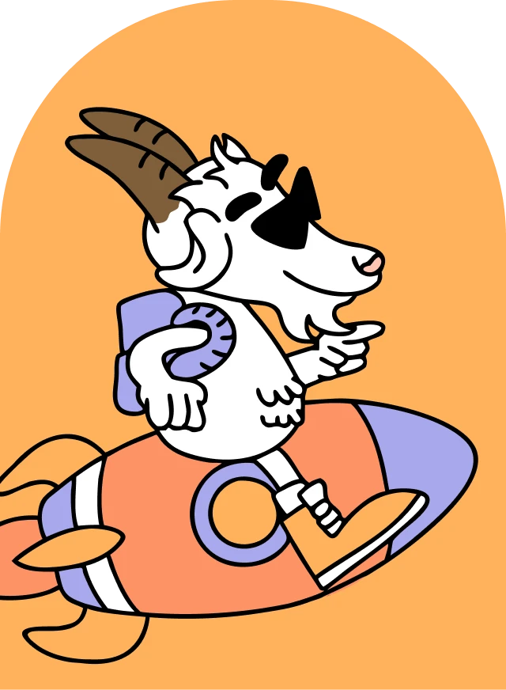
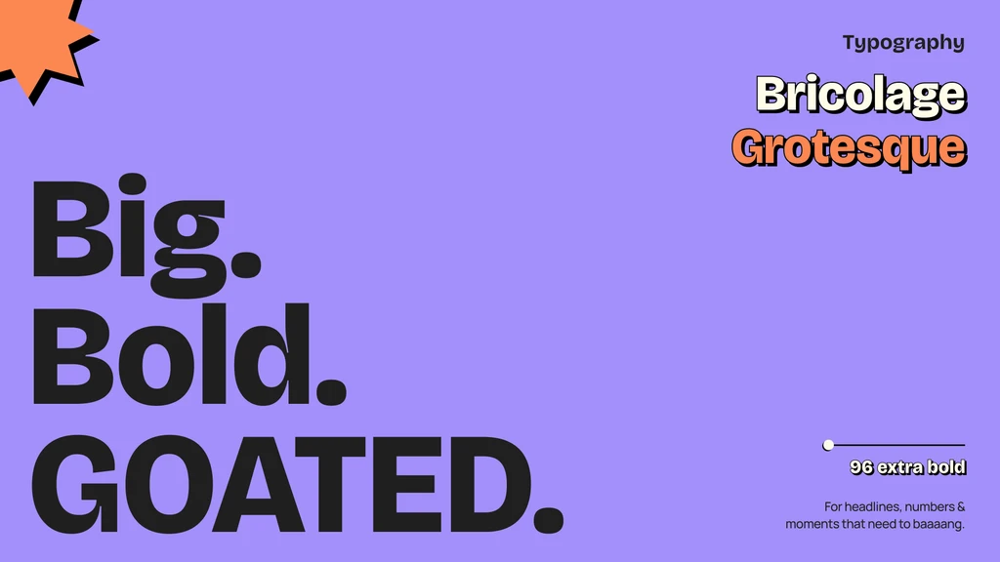
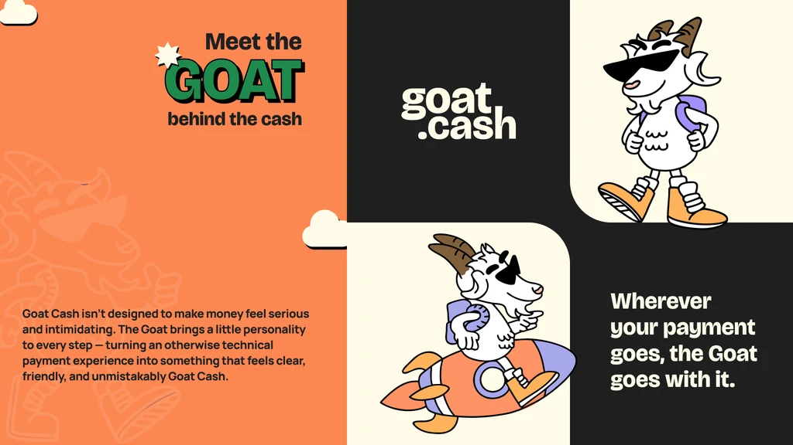
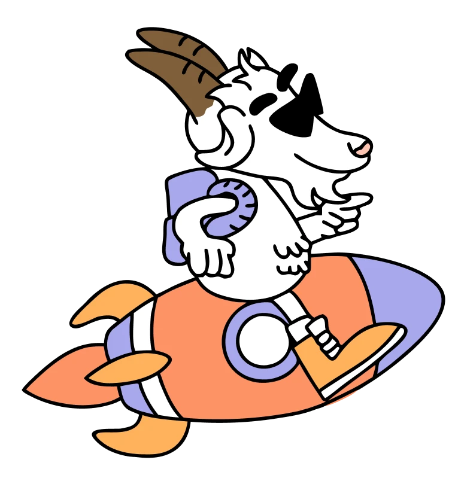

Payments / QR
The Goat goes where you go.
Goat Cash is a digital wallet designed to make everyday payments fast, local, and effortless.

01 — The Challenge
Goat Cash lets users spend their USDC at local merchants through Scan & Pay, connecting digital money with everyday payments.
Goat Cash lets users spend their USDC at local merchants through Scan & Pay, connecting digital money with everyday payments.
The problem was friction: a failed scan can quickly become a dead end, and critical payment details compete for attention.
02 — The Process
Designing beyond individual screens.
Too many steps between scanning and paying. We reduced the flow so the QR is the centre of the experience, not one step among many.
Users don’t always know if their money is moving. We made payment states explicit at every point.
Users shouldn’t have to do the math to understand what they’re actually paying and receiving.
Currency confusion
Users shouldn${AP}t have to do the math to understand what they${AP}re paying.
QR failure friction
A failed scan can quickly become a dead end.
Unclear payment states
Users don${AP}t always know if their money is moving.
Too much information
Critical payment details compete for attention.
03 — The Result
Extending the product language beyond the app.
Make payments feel less complicated. Currency confusion and fragmented payment flows were resolved into one clear path.
Trust at every step: users need confidence before money leaves their wallet, so we surfaced confirmation early.
The result is a wallet that reads as local and familiar rather than crypto-native.
04 — Gallery
Selected frames.




